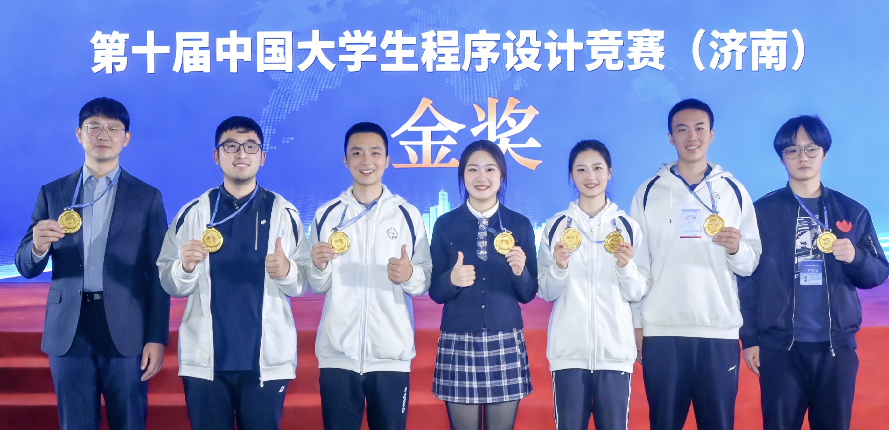

金秋送爽，捷报频传！在刚刚落幕的第十届全国大学生程序设计竞赛总决赛中，我院23级硕士生宋以宁及其团队，凭借项目《一种基于多维特征的自动化资源分配系统》，在全国300余所高校的激烈竞争中脱颖而出，一举斩获全国特等奖！

图：获奖学生代表合影
宋以宁在接受访谈时表示：“科研最关键的是明确方向、动手实践、及时调整。选择课题时，应结合导师指导与自身兴趣，找到既可行又有意义的研究问题。”
她特别感谢SIT Lab提供的平台与资源，让她能够接触到前沿科研数据和工具。在项目推进中，她从跑通开源代码、复现实验基线，到逐步搭建自己的方法体系，充分体会了实践的重要性。
宋以宁同时谦虚表示：“在整个过程中，导师的指导始终是最大的推动力。我非常感谢项目的指导老师陆远航教授，是他为我们指明方向、解答疑惑，并耐心指导每一个实验与调试细节，让项目得以顺利推进。”
学院号召全体师生向宋以宁及SIT Lab团队学习，秉承科研精神，勇攀科技高峰，为建设一流软件工程学院贡献力量！